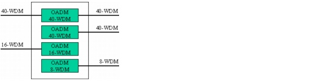
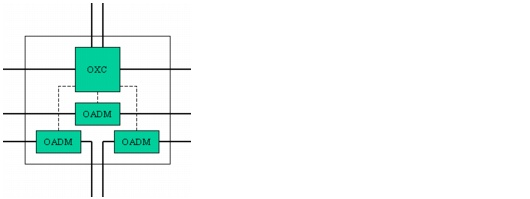

Concepts and Models > Node Modeling Capabilities in SP Guru Transport Planner > Optical Nodes: OADM
Optical Nodes: OADM
An Optical Add/Drop Multiplexer (OADM) is a type of node equipment that connects two fiber pairs (using the same WDM line system) and allows traffic to pass-through or add/drop between both fiber pairs. You can define OADMs for each line system in the WDM Link Equipment dialog box (Network > Equipment Properties > WDM Link Equipment).
SP Guru Transport Planner can model OADMs two ways: it can define nodes as complete OADM nodes and it can specify selective OADMs between two fiber pairs.
Complete OADM Node
SP Guru Transport Planner supports OADM nodes in both opaque and transparent mode, but only in nodes of degree 2 or lower. In this case, the node contains OADM equipment only. The number and type of OADMs in the node depends on the line systems used on the fibers that terminate at the node. Each fiber terminates at an OADM of the same line system. If two terminating fibers use the same line system, the same OADM is reused as shown in Figure 2-24.
Figure 2-24 OADM Node

Selective OADMs Between Two Fiber Pairs
SP Guru Transport Planner supports selective OADMs in nodes of any degree, but in transparent mode only (that is, when the same type of line system is used on all fiber pairs). In this case, the node contains both of the following:
- OADM equipment for selected fiber pairs
- Conventional node equipment (such as OXC, IXC or Patch Panel) to deal with the traffic on fiber pairs that are not directly interconnected by an OADM, as shown in Figure 2-25
Figure 2-25 Selective OADMs Between Fiber Pairs

| Home © 1987-2007 OPNET Technologies, Inc. All Rights Reserved. This software may be covered by one or more U.S. Patents. See complete patent notice in the Legal Notices section. OPNET Support Center |